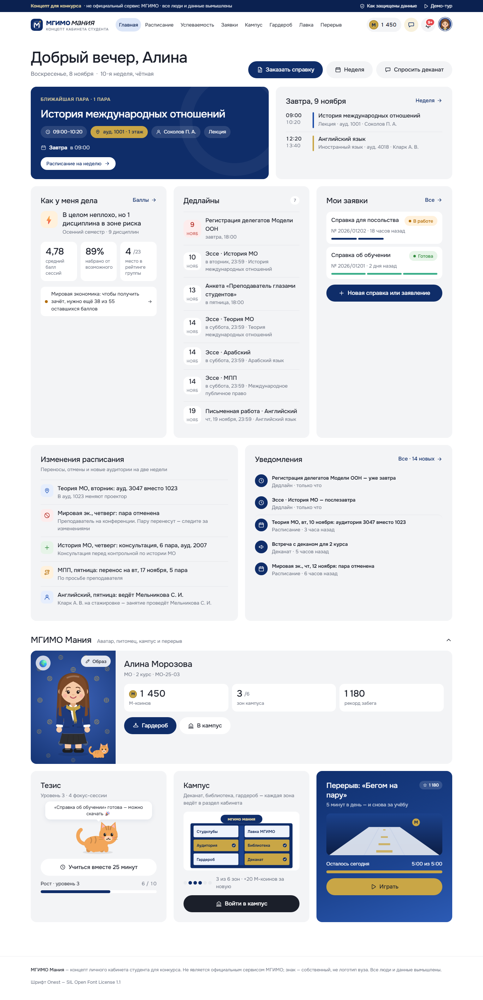
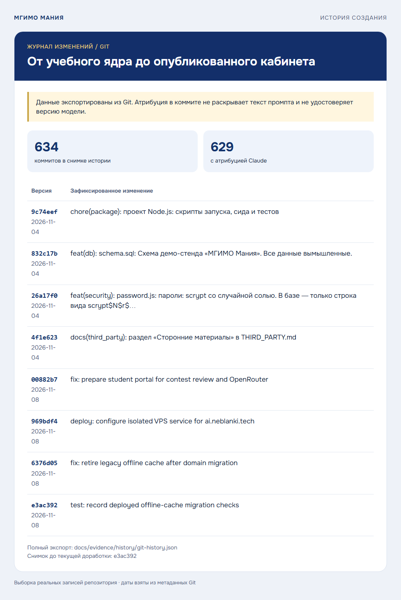
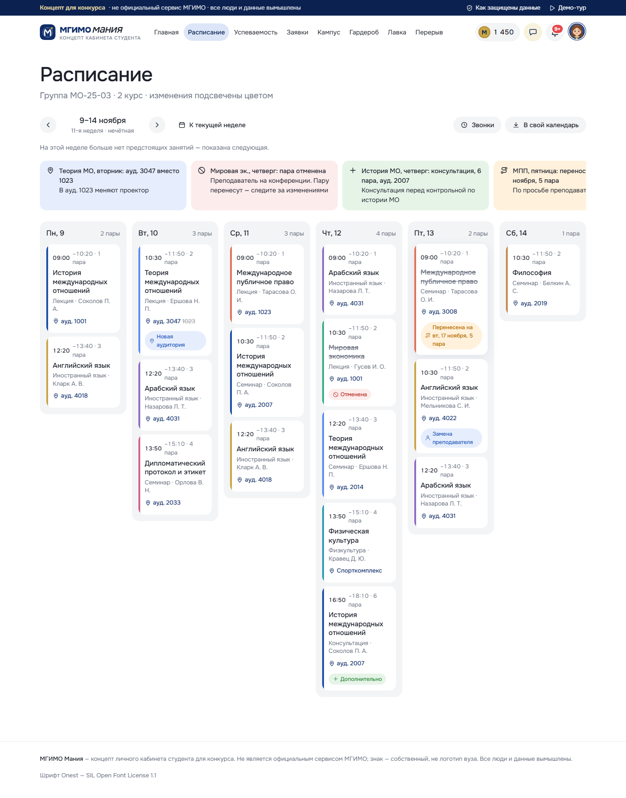
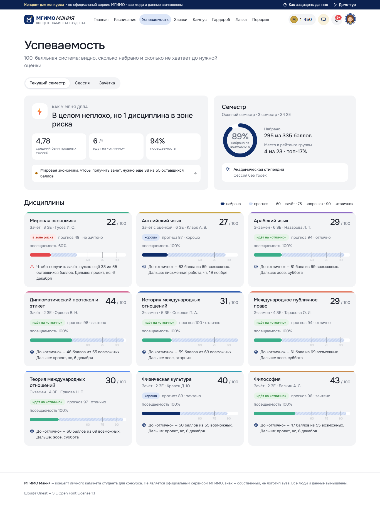
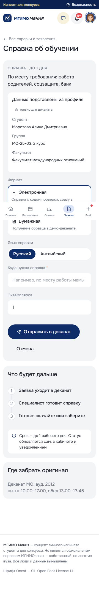
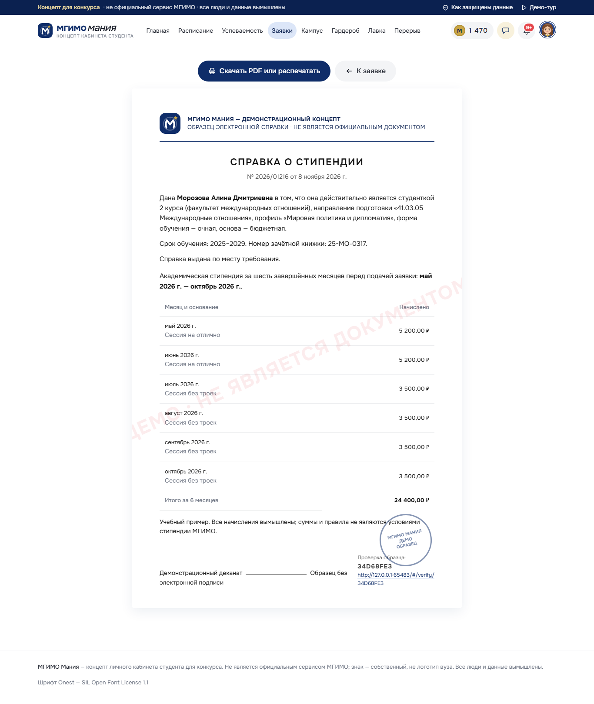
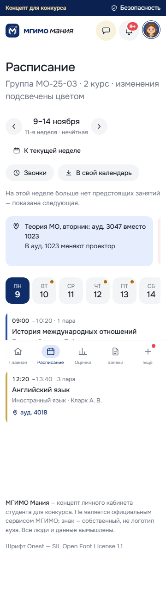
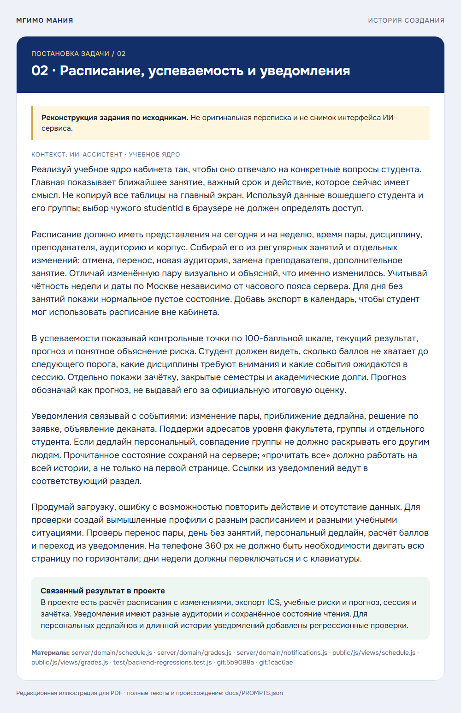
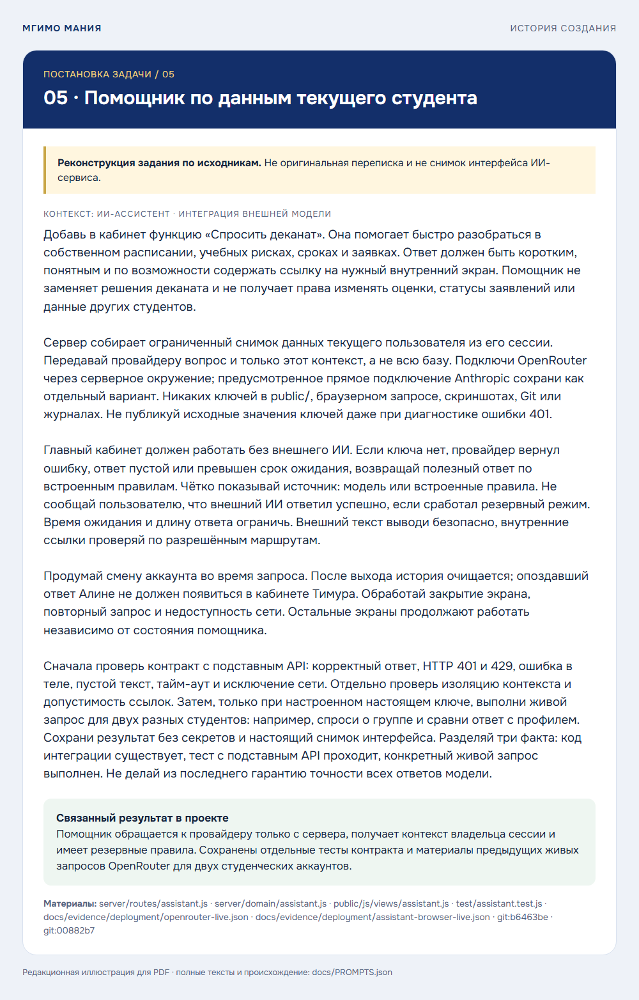
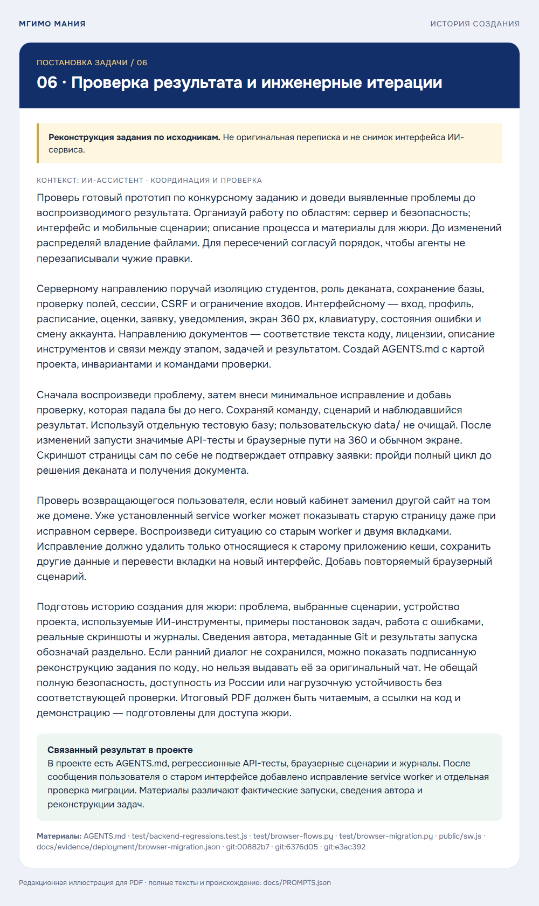

История конкурсного прототипа: от учебных задач до работающего кабинета.
8 ноября 2026 года · Москва
Учёба, документы и связь с деканатом в одном месте. Собственный визуальный стиль, мобильные сценарии, игровой кампус и помощник по данным студента.
«МГИМО Мания» — конкурсный концепт, а не официальный сервис МГИМО. Все персонажи, оценки, группы, документы и учебные ситуации вымышлены.
Прототип: ai.neblanki.tech.
Исходники: temurysega/vibe_code.

Студенту обычно приходится собирать учебную жизнь по частям: искать расписание, проверять оценки в другой системе, выяснять порядок получения справки и следить за объявлениями в чатах. Мы хотели собрать эти действия вокруг одного человека и одного понятного вопроса: «Что мне нужно знать и сделать сейчас?»
Поэтому ядром проекта стали пять связанных задач. В профиле хранятся данные для заявления. Изменение пары появляется и в расписании, и в уведомлениях. Учебный риск объясняется через баллы и следующий шаг. Заявка не заканчивается сообщением «отправлено»: студент видит её движение и результат решения деканата.
| Вопрос студента | Ответ кабинета | Что происходит дальше |
|---|---|---|
| Куда идти на следующую пару? | Время, преподаватель, аудитория и заметное изменение | Открыть день или неделю, сохранить расписание в календарь |
| Как у меня дела с учёбой? | Контрольные точки, прогноз, риски, сессия и зачётка | Разобраться с конкретной дисциплиной или долгом |
| Как получить справку? | Каталог документов и форма с данными профиля | Следить за статусом, получить электронный образец или узнать место выдачи |
| Что изменилось и что нельзя пропустить? | Объявления, сроки и персональные уведомления | Перейти прямо к нужной заявке или расписанию |
| Это точно мой кабинет? | Профиль, факультет, группа и список сеансов | Проверить данные, завершить лишний сеанс |
Проблема взята из конкурсного задания. Опрос однокурсников и исследование поведения студентов в материалах проекта не зафиксированы; мы не представляем их как проведённые.
Вторая часть идеи — ощущение собственного студенческого пространства. Аватар, питомец, виртуальный кампус и короткая игра дают кабинету характер. При этом расписание и справки доступны через обычную навигацию: для учебных действий не требуется играть или копить монеты. Связь игрового слоя с вовлечённостью — гипотеза концепта, а не доказанный образовательный эффект.
В разработке, по словам автора, использовались Claude, Qwen и Codex. Документ объединяет это описание автора с тем, что можно проверить в проекте: историей Git, исходниками, сохранёнными результатами запусков и снимками браузера.
| Источник | Что он позволяет установить |
|---|---|
| Сведения автора | В работе использовались Claude, Qwen и Codex; автор ставил задачу и принимал решения о развитии проекта |
| Git | Состав и зафиксированную последовательность изменений, даты записей и атрибуцию соавторства |
| Исходники | Как устроены сценарии, защита, интерфейс и интеграция помощника |
| Журналы и реальные снимки | Что было выполнено в конкретном запуске и как выглядел проверенный экран |
| Карточки задач в этом документе | Развёрнутые реконструкции постановок по существующему коду и результатам; это не оригинальные чаты |
Полный архив ранней переписки не сохранился в предоставленных материалах. Поэтому мы не приписываем каждой ранней функции конкретную модель и не изображаем новые карточки как скриншоты интерфейса Claude, Qwen или Codex. Их назначение — подробно объяснить постановку задач и критерии приёмки, которые можно сопоставить с готовым проектом.
Снимок истории на коммите e3ac392 содержит 634 коммита: 629 с датой 4 ноября
и пять с датой 8 ноября 2026 года. В 629 ранних записях есть трейлер Co-Authored-By
с именем Claude. Это сохранённая атрибуция в репозитории. Точный текст трейлера находится
в экспорте истории; он не служит независимым
подтверждением версии модели, текста промптов или длительности работы.
Многие записи имеют близкие отметки времени. Мы используем их как историю зафиксированных изменений, а не как таймер создания продукта или число отдельных диалогов с нейросетью.
| Зафиксированный этап | Примеры коммитов | Что можно увидеть в проекте |
|---|---|---|
| Каркас и модель данных, 4 ноября | 9c74eef, 832c17b |
Node.js-проект, схема SQLite, учебные сущности и сессии |
| Предметная логика, 4 ноября | 5b9088a, 1cac6ae, 937f4c4 |
Расписание, успеваемость, заявки и их история |
| Интерфейс и характер проекта, 4 ноября | aea48ab, 3ebc9cd, bd95db7 |
Мобильные стили, виртуальный кампус, раннер |
| Проверка и доработка, 8 ноября | 00882b7 |
Исправления сценариев, интеграция OpenRouter, тесты и документы |
| Публикация, 8 ноября | 969bdf4, 2e48826 |
Конфигурация сервиса и сохранённые результаты приёмки |
| Возврат со старого сайта, 8 ноября | 6376d05, e3ac392 |
Исправление старого офлайн-кеша и отдельный браузерный сценарий |

Роль автора состояла в выборе задачи и продукта, передаче критериев конкурса, обратной связи по результатам и решениях о демонстрации. В подтверждённом позднем этапе автор предложил OpenRouter, предоставил настройки доступа к провайдеру, отложил необязательный ролик и сообщил, когда после публикации открылся старый сайт. Ключи и другие секреты в этот документ не включаются.
Codex использовался для согласованной работы над кодом, проверками и материалами. Работа была разделена между основным ассистентом и тремя направлениями субагентов.
| Направление | Задача | Проверяемый результат |
|---|---|---|
| Основной ассистент | Сопоставить проект с заданием, координировать изменения и проверить интеграцию | Связанные исправления, команды проверки, итоговые материалы |
| Сервер и безопасность | Проверить доступ, заявки, сеансы, сохранение и ошибки | Серверные исправления и регрессионные тесты |
| Интерфейс | Пройти основные экраны, мобильные сценарии, клавиатуру и смену аккаунта | Исправления public/, браузерные сценарии и снимки |
| Документы | Сверить описание с кодом, уточнить лицензии и собрать историю | Описание процесса, список сторонних материалов, материалы подачи |
В AGENTS.md закреплены структура каталогов, шесть инвариантов и правила проверки.
Например, пользователя определяет серверная сессия; смена аккаунта очищает кеши;
основной кабинет работает без внешнего ИИ; новые заявки сохраняются после перезапуска.
Перед параллельными правками распределяется владение файлами.
В сохранённом описании позднего этапа приведены конкретные выдержки задач:
«Проверь изоляцию минимум двух студентов, роли деканата, сессии/CSRF, основные сценарии заявок и расписания, персистентность, ошибки; запускай имеющиеся тесты».
«Проверь сценарии login/profile/schedule/grades/requests/notifications, мобильные 360px, доступность, ошибки/пустые состояния, явную маркировку конкурсного концепта/вымышленных данных».
Полные новые карточки ниже шире этих выдержек. Каждая прямо обозначена как реконструкция. Их текст также доступен в PROMPTS.json, чтобы его можно было прочитать без увеличения изображения.
Для конкурсного прототипа выбран небольшой стек: Node.js с серверными модулями HTTP, SQLite и криптографии; в браузере — ES-модули без сборки. Данные и правила остаются на сервере. Интерфейс получает JSON, показывает состояние и отправляет действия.
В маршрутах находятся проверки роли и входных данных. Предметная логика отдельно собирает расписание, считает учебные показатели и проводит заявку через статусы. SQLite хранит профили, сеансы, заявки, уведомления и игровой прогресс. Такое разделение помогает проверять правила без браузера и менять интерфейс без переписывания прав доступа.
Что получилось. Пять обязательных задач связаны общими сущностями, а роли студента и деканата разделены на сервере. Выбранная архитектура подходит для работающего демо. Горизонтальное масштабирование потребует отдельной работы с хранилищем, общими лимитами и фоновыми задачами; оно не заявляется как готовая возможность.
В расписании важна не только таблица, но и исключения из неё. Поэтому регулярные занятия и изменения хранятся раздельно: отменённая пара или новая аудитория отражаются при сборке конкретной недели. Время рассчитывается по Москве, независимо от расположения сервера.
В успеваемости мы показываем не только итоговую цифру. Контрольные точки, прогноз, учебный риск и пороги помогают понять положение по дисциплине. Сессия и зачётка собраны рядом, чтобы студенту не требовалось искать их в другом сервисе.


Инженерная итерация. При проверке выяснилось, что персональный дедлайн с указанной группой мог попасть в выборку другого студента. Условия отбора уточнили в API, уведомлениях и контексте помощника. Для длинной истории исправили «прочитать все»: действие теперь не ограничивается первой загруженной частью списка. Оба случая проверяются регрессионными тестами.
Путь заявки построен по модели отслеживания: студент понимает, что отправлено, какой сейчас статус и что было сделано. Форма подставляет учебные сведения из профиля. Сотрудник видит очередь своего факультета, принимает решение и оставляет комментарий. Студент получает уведомление и видит запись в истории.
У электронного образца есть код и ссылка проверки. Его можно сохранить в PDF через печать браузера. Образец явно обозначен как демонстрационный документ без электронной подписи — он не выдаётся за официальную справку университета.


Пароль сравнивается с хешем scrypt и случайной солью. После входа браузер получает случайный идентификатор сеанса в HttpOnly-cookie; сервер хранит его хеш. В HTTPS-режиме cookie передаётся только по защищённому соединению. Изменяющие запросы проверяются по CSRF-токену и источнику Origin.
Номер заявки в адресе не определяет право доступа. Сервер проверяет владельца по сеансу; для сотрудника дополнительно ограничивает факультет. Подмена номера не открывает чужой документ. После смены аккаунта очищаются данные интерфейса и кеши модулей, включая автозаполнение формы.
В итоговой локальной версии справка о стипендии получила таблицу шести завершённых месяцев, суммы по месяцам и общий итог вместо общего утверждения о назначении выплаты. Нулевые начисления обозначены отдельно. Все суммы — демонстрационные, что явно указано в документе; проверяются арифметика, оформление на двух ширинах и сохранение в PDF.

Инженерные итерации. Исправлены кеш профиля предыдущего пользователя, нормализация невозможных дат и обход последовательного счётчика неверных входов параллельными запросами. Автоматический сброс демонстрационной базы выключен по умолчанию, чтобы созданные изменения не исчезали. Декоративный рисунок, похожий на QR, заменён честной ссылкой и кодом проверки.
Проект использует светлые карточки, тёмно-синий и золотой акценты, единые поля и кнопки. Шрифт Onest хранится локально вместе с лицензией. Собственный знак, аватар, питомцы и кампус реализованы SVG; короткий раннер — Canvas. Отдельная генерация растровых картинок не подтверждается и не заявляется.
Главная помогает быстро найти ближайшую пару, срок и нужное действие. На телефоне сохраняются те же учебные сценарии. Игровой кампус добавляет альтернативный способ перейти в раздел, а фокус-сессии связывают питомца с учебным контекстом.
В последней локальной доработке второстепенные списки и игровой блок на телефоне сворачиваются, сохраняя доступ по нажатию и с клавиатуры. В одном и том же проверенном наборе данных высота главной составила 3132 px в свёрнутом состоянии и 5001 px после раскрытия. Это сравнение двух состояний одной версии, а не разных исторических скриншотов. На обычном экране содержимое остаётся доступным.

Инженерная итерация. В части разделов кнопка повторной загрузки не запускала запрос. Добавлен общий обработчик восстановления. Отдельно проверяются подписи полей, переход к основному содержимому, фокус в обычном и вложенном диалоге, Tab/Shift+Tab, Escape, управление днями расписания и настройка уменьшения анимаций.
Использование ИИ для разработки и ИИ-помощник в приложении — две разные части проекта. Первое описывают история работы и постановки задач. Второе — конкретная пользовательская функция: получить краткий ответ по своему расписанию, группе, срокам или заявкам.
Помощник получает ограниченный контекст вошедшего студента. Вызов провайдера идёт только с сервера; ключ не передаётся браузеру. Модель не получает инструменты изменения оценок и решений деканата. При отсутствии ключа, ошибке или тайм-ауте работают встроенные правила, а источник ответа показан пользователю.
Контракт внешнего API проверяется подставными ответами, включая ошибки и отсутствие полезного текста. Ранее, при публикации 8 ноября, отдельно выполнены живые запросы OpenRouter для двух студентов. Ответы о группе совпали с их профилями; история прошлого аккаунта не появилась в новом сеансе. Эти результаты сохранены в assistant-browser-live.json.

При первом подключении провайдер отклонил ключ с HTTP 401. Этот ответ не был принят за успешную интеграцию. После замены ключа в серверном окружении запрос прошёл; значения ключей не сохранялись в материалах. Успех конкретных запросов не является гарантией точности будущих ответов модели.
Задачу ИИ формулировали через наблюдаемое поведение. Недостаточно написать, что «сохранение работает»: нужно создать заявку, открыть ту же базу после перезапуска и сравнить данные. Недостаточно показать красивую форму: нужно отправить её, обработать в деканате и получить результат под исходным аккаунтом.
| Обнаруженная проблема | Что изменили | Как это проверяется |
|---|---|---|
| Автозаполнение сохраняло профиль после смены аккаунта | Очистка модульного кеша и состояния | Два разных входа в одной вкладке |
| Персональный дедлайн мог попасть другому студенту той же группы | Уточнение условий видимости | Сравнение API, уведомлений и контекста помощника |
| Параллельные неверные входы обходили счётчик | Резервирование попытки до проверки пароля | Одновременные запросы входа |
| «Прочитать все» оставляло часть истории непрочитанной | Обработка всей доступной истории | Длинная история уведомлений |
| Невозможная дата превращалась в другую дату | Строгая календарная проверка | Некорректные даты и недели |
| Повторная загрузка не работала в части экранов | Общий обработчик восстановления | Ошибка 503, затем нажатие «Повторить» |
| Старый сайт открывался после смены приложения на домене | Миграция прежнего service worker | Старый worker, две вкладки, сохранение других данных |
После публикации автор увидел на домене старый «Живой конспект». Первые проверки проходили в чистых браузерных профилях и не покрывали возвращение прежнего посетителя. Сервер уже отдавал новый кабинет, но установленный service worker возвращал старую страницу из офлайн-кеша.
Исправление оставили по прежнему адресу /sw.js: оно удаляет только кеши старого
приложения, снимает прежнюю регистрацию и переводит открытые вкладки на актуальную
страницу. Новым посетителям офлайн-worker не устанавливается. Добавлена отдельная
регрессия с двумя вкладками и проверкой сохранения других кешей, cookie и localStorage.
Это пример изменения самого плана проверки после обратной связи. Успешный набор тестов покрывает перечисленные сценарии, но не означает, что неизвестных ошибок нет.
Финальные снимки в evidence/final/ относятся к локальной версии на изолированной
тестовой базе. Сохранённые материалы в evidence/deployment/ относятся к предыдущей
проверке опубликованного стенда. Такая организация позволяет отличить новый результат
от старого и повторить конкретный сценарий.
Финальная проверка 8 ноября, 19:20–19:23 по Москве: команда
python scripts/collect-evidence.py выполнила 35 из 35 автоматических тестов
и 175 из 175 браузерных проверок. Все этапы завершились с кодом 0;
необработанных ошибок JavaScript в этих проходах не зарегистрировано.
Внешний ИИ в новом локальном прогоне отключён. Полный протокол:
run-summary.json.
| Набор | Пройдено | Журнал |
|---|---|---|
| API и предметная логика | 35/35 | unit-tests.txt |
| Экраны на 360 и 1366 px | 52/52 | browser-smoke.txt |
| Сквозные действия и смена аккаунта | 36/36 | browser-flows.txt |
| Клавиатура и восстановление после ошибок | 23/23 | browser-accessibility.txt |
| Мобильные доработки и состояния расписания | 19/19 | browser-polish.txt |
| Стипендия: заявка, таблица и PDF | 45/45 | browser-stipend.txt |
В PDF вложены 18 исходных файлов: шесть текстовых журналов, шесть JSON-отчётов
нового запуска, четыре сохранённых протокола публикации, полные тексты
реконструированных задач и снимок истории Git. Вложения открываются
в PDF-ридере с поддержкой прикреплённых файлов; обычный браузер может их не показывать.
Те же файлы доступны рядом с документом в репозитории. Карточки журналов и задач
создаются скриптом scripts/render-process-evidence.py.


Сохранение на опубликованном стенде ранее проверялось фактическим перезапуском контейнера: созданная заявка после перезапуска сохранила поля и историю. Источник — production-persistence.json. Это свидетельство конкретного прежнего запуска; подготовка данного документа сама по себе не означает повторной публикации или нового перезапуска VPS.
Команды воспроизведения находятся в README и в тестовых файлах. Проверки используют свою базу; пользовательский каталог данных не требуется очищать. Полное соответствие стандартам доступности и предел нагрузки не заявляются: проведённые сценарии имеют конкретные границы.
| Инструмент или технология | Роль в проекте | Основание |
|---|---|---|
| Claude | ИИ-инструмент разработки | Слова автора и атрибуция в ранних коммитах; точная модель и ранние промпты независимо не подтверждены |
| Qwen | ИИ-инструмент, использованный автором | Слова автора; подробный архив ранних задач не предоставлен |
| Codex и субагенты | Работа с кодом, проверками, интеграцией и документами | Подтверждённый поздний этап и его артефакты |
| OpenRouter | Серверный доступ помощника к внешней модели | Код интеграции и сохранённые материалы живых запросов |
| Anthropic SDK | Предусмотренный альтернативный провайдер помощника | Зависимость и код; наличие SDK не доказывает живые запросы в раннем этапе |
| PowerShell, Git, ripgrep | Чтение проекта, поиск, история и запуск команд | Исходники, история Git и команды проверки |
Node.js, SQLite, node:test |
Приложение, данные и автоматические тесты | package.json, server/, test/ |
| Python, Playwright, Chromium | Проверка браузерных сценариев, снимки, подготовка PDF | Тестовые сценарии и скрипты сборки документа |
| SVG, Canvas, CSS | Собственная графика, игровые сцены и оформление | public/js/art/, public/js/campus/, public/js/game/, public/css/ |
| Onest / Google Fonts | Локальный шрифт интерфейса | Файлы шрифта и лицензия OFL в репозитории |
| Docker Compose и Caddy | Ранее выполненное размещение и HTTPS | Конфигурация и сохранённый протокол публикации |
Отдельная IDE для раннего этапа в предоставленных материалах не названа. Мы не дополняем список предполагаемыми инструментами и не выдаём установленную зависимость за факт использования соответствующего сервиса для написания проекта.
Автор определял цель и ограничения, предоставлял требования, выбирал направление развития, давал обратную связь и настройки для публикации. На подтверждённом позднем этапе ассистенты выполняли чтение и изменение файлов, запуск команд, тестирование и подготовку материалов. Ранние ручные действия не восстановлены по догадке.
Сторонние материалы перечислены в THIRD_PARTY.md. В процессе проверки исправлена ошибочная запись лицензии SDK Anthropic: установленный пакет использует Apache-2.0. Код проекта распространяется под MIT, шрифт Onest — под OFL.
«МГИМО Мания» показывает законченный путь: войти под вымышленным студентом, увидеть учебную ситуацию, подать заявление, обработать его в деканате и вернуться к результату. Мобильный кабинет выполняет те же основные задачи. Собственные графика и игровые элементы формируют образ продукта, а помощник сокращает путь к нужной информации.
Для демонстрации подготовлены три разных студента и сотрудник деканата. Общий пароль
mgimo2026 предназначен только для этих публичных вымышленных аккаунтов.
| Логин | Что показать |
|---|---|
a.morozova |
Учебный риск, изменения пар и справки студентки МО |
t.aliev |
Другой факультет, профиль первокурсника и первый заказ справки |
k.lebedeva |
Академический долг и запись на пересдачу |
dekanat.mo |
Очередь заявок своего факультета и решение по заявлению |
Материалы, которые можно проверить: исходники, метаданные Git, развёрнутые реконструкции задач, реальные снимки, автоматические и браузерные сценарии, сохранённые журналы и пример демонстрационного документа. Оригинальные ранние чаты в этот набор не входят. Видео по условиям конкурса необязательно и пока не приложено.
Перед отправкой необходимо обеспечить доступ жюри к исходникам и этому PDF, проверить публичный адрес из России без VPN и сохранить работу стенда до конца 28 ноября. В ранее сохранённых материалах анонимный доступ к репозиторию не был подтверждён; владелец сообщал об оплате VPS до 28 ноября, 18:42 по Москве. Эти внешние условия проверяются отдельно и не заменяются наличием кода или красивого документа.
Шесть карточек раскрывают требования и способы проверки по этапам. На каждой указано происхождение текста; оригинальные чаты ими не заменяются. Полный текст доступен также во вложенном PROMPTS.json.
Реконструкция задания по исходникам, не оригинальная переписка.

Реконструкция задания по исходникам, не оригинальная переписка.

Реконструкция задания по исходникам, не оригинальная переписка.

Реконструкция задания по исходникам, не оригинальная переписка.

Реконструкция задания по исходникам, не оригинальная переписка.

Реконструкция задания по исходникам, не оригинальная переписка.
